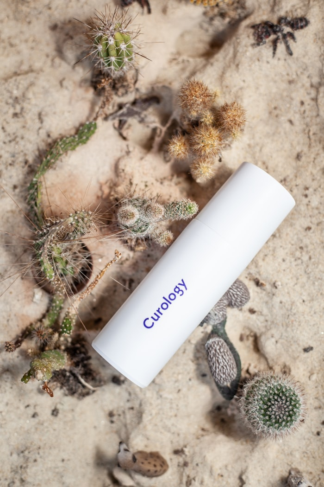

La crema Depanten es un producto de origen natural formulado específicamente para combatir el dolor de huesos y articulaciones. Su fórmula única combina ingredientes activos de plantas medicinales que actúan de forma sinérgica para aliviar el dolor, reducir la inflamación y estimular la regeneración del tejido cartilaginoso. A diferencia de los analgésicos orales, su aplicación tópica permite que los principios activos lleguen directamente a la zona afectada.
La crema Depanten actúa en múltiples frentes para combatir los problemas articulares. Sus componentes naturales penetran en profundidad a través de la piel, alcanzando las estructuras articulares afectadas. El efecto analgésico se percibe a los pocos minutos de la aplicación, mientras que el efecto antiinflamatorio se consolida con el uso continuado. Además, sus principios activos estimulan la producción de colágeno y proteoglicanos, componentes esenciales del cartílago articular.
Depanten está recomendada para una amplia variedad de dolencias músculo-esqueléticas. Es especialmente eficaz en casos de artrosis, artritis, osteocondrosis y dolores crónicos de espalda. También resulta muy útil para el tratamiento de lesiones deportivas, contracturas musculares, tendinitis y bursitis. Su uso está indicado tanto para el alivio puntual del dolor agudo como para el tratamiento sostenido de condiciones crónicas.
Para obtener los mejores resultados, se recomienda aplicar la crema Depanten sobre la piel limpia y seca de la zona afectada, masajeando suavemente hasta su completa absorción. El tratamiento óptimo consiste en aplicarla 2-3 veces al día durante un período mínimo de 4 semanas. La mayoría de los usuarios perciben una mejoría significativa en los primeros 7-10 días de uso. Para problemas crónicos, se recomienda continuar con el tratamiento preventivo incluso tras la desaparición del dolor.

Depanten está formulada con tecnología transdérmica avanzada que permite que sus principios activos lleguen directamente a la articulación afectada en minutos. Su textura no grasa facilita la aplicación y no mancha la ropa.
"Como especialista en reumatología, recomiendo Depanten a mis pacientes que buscan un alivio eficaz y natural del dolor articular. Su formulación única actúa directamente sobre el foco del dolor, mejorando la movilidad y la calidad de vida. Es un producto seguro y bien tolerado incluso en tratamientos prolongados."
"Llevaba años con dolor en las rodillas y ningún producto me daba alivio duradero. Con Depanten noté mejoría desde el segundo día. Ahora puedo subir escaleras sin problema. ¡Lo recomiendo a todo el mundo!"
"Trabajo de pie todo el día y el dolor en las articulaciones de los pies era insoportable. Empecé a usar Depanten y en una semana el alivio fue notable. Es el mejor producto que he probado para el dolor articular."
"Tengo artrosis en las manos y me dificultaba las tareas del hogar. La crema Depanten ha sido una bendición. Ya puedo coser y cocinar sin ese dolor constante. El precio es muy razonable para lo que ofrece."
Solo 39 € en lugar de 78 €. Envío a toda España. Pago al recibir.
ENCARGAR AHORA →